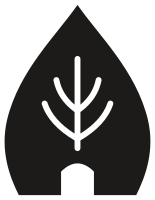

Gagasan yang menemukan wujudnya.
Miselium adalah jaringan halus di bawah tanah yang tumbuh bercabang dan saling menyambung, lalu sesekali memunculkan sesuatu ke permukaan. Begitulah Miselia Studio bekerja: satu gagasan memunculkan gagasan lain, dan sebagian tumbuh menjadi aplikasi yang bisa dipakai.